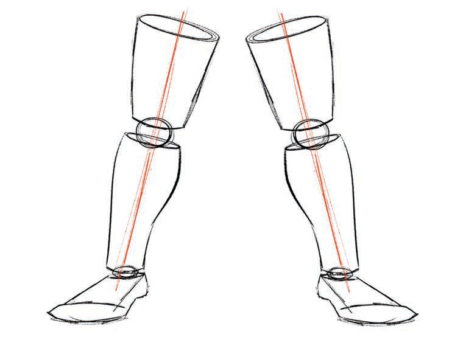

Activity 6
Use cube and cylinder shapes to draw the human being's chest.
Drawing the human being's legs
Draw two cylinders connected with circles to form one complete leg. Repeat this step to draw the second leg. Figure 9 shows how to use a cylindrical shape to draw the human being's legs.

Activity 7
Use a cylinder shape to draw the human being's legs.
Drawing a full human figure
To draw a human figure, draw the shapes of the head, chest, arms, and legs, and connect them so that each one fits into its part to make a human figure. Figure 10 shows a guide to using shapes in drawing a full human figure.